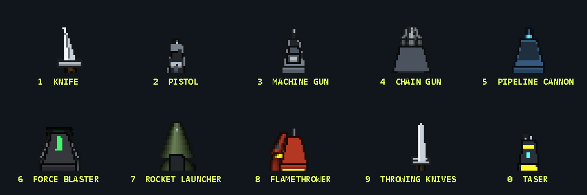

Clock in. Fight your way out.
From Shellstein Dungeon to Ring 0. Ten floors of patrols, traps, secrets, and deeply unhelpful office equipment.
A FIRST-PERSON SHOOTER. IN POWERSHELL.
Someone gave PowerShell a gun.
Now there are ten floors to clear, a printer to fight, and absolutely no good reason this should work.
WINDOWS · POWERSHELL 7.2+ · OPEN SOURCE

01 / THE BEAUTIFULLY BAD IDEA
A textured, ray-casting shooter with secret walls, boss fights, and a real in-game console. Almost all of it is plain PowerShell. Somehow, the answer was yes.
Campaign floors + a secret one
Players. Co-op or deathmatch.
Pre-made game asset files
 BRING FRIENDS. ESCALATE PRIVILEGES.
BRING FRIENDS. ESCALATE PRIVILEGES.
From Shellstein Dungeon to Ring 0. Ten floors of patrols, traps, secrets, and deeply unhelpful office equipment.
Bring up to three friends over the network. Clear the campaign together, or settle things in deathmatch.
A daily generated dungeon with verifiable runs. Or step into the arena and see how many waves you survive.
02 / THE BUILDING
Every floor has its own walls, its own music and its own way of making your day worse. Find the keys, find the lift, and read the report it hands you on the way up.


03 / COMMON PARAMETERS. UNCOMMON VIOLENCE.
These aren't cheat codes. They're your abilities.
Spend privilege. Bend the rules.
[ Z ] · 25 PRIVILEGE
Freeze time for four seconds. Ghosts reveal the next two seconds of enemy movement. The red ones are about to fire. Plan accordingly.
A real forecast: the game simulates ahead, then restores the world.

Yes, the console is real.
Pipelines, a $PROFILE, background jobs. All inside the game's sandbox.
See it below ↓04 / POWERSHELL IS NOT JUST THE LANGUAGE. IT IS THE THEME.
The world stops and you get a PowerShell prompt. A real one: pipelines, Where-Object, Sort-Object, script blocks, tab completion. The game's cmdlets cost privilege when they do something.
 REAL PIPELINES. REAL -WHATIF. NO WAY OUT OF THE SANDBOX.
REAL PIPELINES. REAL -WHATIF. NO WAY OUT OF THE SANDBOX.
# who is coming, nearest first?
Get-Enemy | Sort-Object Distance | Select-Object -First 4
# freeze everyone who is shooting at you
Get-Enemy | Where-Object State -eq 'attacking' | Suspend-Enemy
# who needs keys
Get-Door | Where-Object Lock -ne '-' | Open-Door
# the sentry gun changes sides
Get-Enemy -Kind turret | Set-Turret -Owner MeLog on at a terminal and read what happened at Shellstein, floor by floor: tickets nobody could close, a duty roster, the minutes of the board. Some of them give codes away.
Start-Job sends out a drone that flies through the ventilation and brings back ammunition, first aid and keys. Receive-Job drops the load at your feet.
Write a function, save it to your profile, and put it on a key with Set-Hotkey. It runs in the middle of a fight without opening the console.
05 / STEALTH
Anyone who has not noticed you takes double damage. Sneak, use the knife, stay out of sight. Every shot you fire and every camera that sees you makes the whole floor more nervous.
 TOP LEFT: THE POLICY, AND HOW MUCH NOISE YOU ARE MAKING.
TOP LEFT: THE POLICY, AND HOW MUCH NOISE YOU ARE MAKING.
RestrictedThe house suspects nothing. Nobody watches the logs, so your privilege comes back 30 % faster.
AllSignedIt has been told to look twice. Enemies react quicker and gunfire carries further.
RemoteSignedIt is on edge. Quicker still, and a shot is heard most of the way down the floor.
UnrestrictedIt sounds the alarm. Everybody who can reach you comes running.
Set-ExecutionPolicy Restricted calms the house down again, for a price. Setting it to Unrestricted is free. You will pay for it in other ways.
06 / THE STAFF AND THE ARSENAL
Guards, dogs, snipers and shield bearers.
And then the office equipment.

BOSS / LEGACY.BAT
Twin machine guns, three rounds per salvo, then a pause. That pause is your moment.
SUPER BOSS / THE PRINTER
Gun bursts and salvos of rockets. After every second salvo it has a paper jam: four seconds of helpless blinking and triple damage.
ALSO ON THE PAYROLL
The auditor runs for a terminal to report you. The engineer repairs what you broke. Blow up a bug and two smaller ones crawl out: fix one, get two.

[ 5 ] PIPELINE CANNON
| passes everything along.”The beam goes through every enemy in the line of fire.
[ 6 ] FORCE BLASTER
For your whole field of view. Fed by rare Force charges.
[ 0 ] TASER
Silent. Stuns people for five seconds and switches cameras, sentry guns and kamikaze bots off for good.
07 / MORE WAYS TO PLAY
New here? Start with the onboarding. Done with the campaign? There is a fresh dungeon every day, an arena that never ends, and a version that runs in your terminal.


08 / NO ASSET FILES
The download is 350 KB.
The rest is arithmetic.
Sprite images, painted by code
Sound effects, synthesised
Tracks, composed by a chiptune composer

How far can PowerShell go?
Ray casting, AI, music, a network protocol, a GIF encoder. C# only where PowerShell cannot keep up.
Read how it was built ↗09 / EXECUTION POLICY: HAVE FUN
Free to play. Open source. Unreasonably committed to the bit.
Download POLF 3D ↓WINDOWS · POWERSHELL 7.2+ · MIT LICENSE
Download and unpack polf3d.zip.
Run Play.cmd. Press N for the tutorial.
git clone https://github.com/oNdsen/polf3d.git cd polf3d ./Start-Polf3D.ps1
First launch compiles four small C# helpers and caches generated audio. No extra modules needed. After that the game updates itself from the title screen. Full setup notes ↗